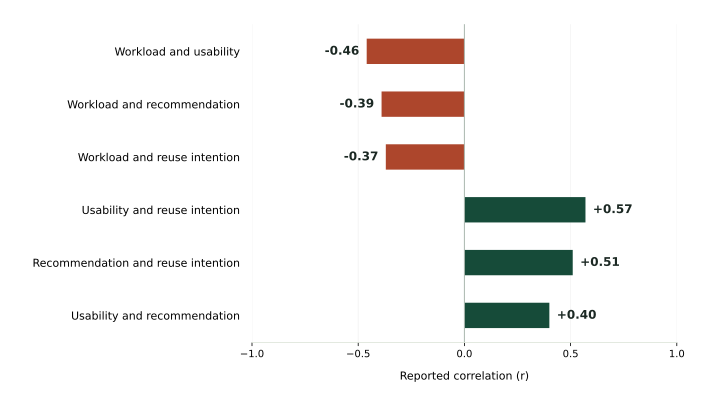

Community research · Thailand FCP workflow
Higher workload accompanied a poorer workflow experience
Frontline Church Partner (FCP) staff rated the workflow less usable, less worth reusing, and less recommendable when mental demand was higher.
Investigate demanding tasks, simplify the workflow, and test whether those changes reduce effort while preserving useful functionality.
Three findings guide the next evaluation
Workload and usability
r = −0.46
More effort, poorer usability
This was the largest negative association reported. It identifies mental demand as a useful diagnostic signal.
Usability and intention to reuse
r = +0.57
Usability aligned with reuse intention
This was the largest positive association. Staff who rated the workflow more usable also expressed greater willingness to use it again.
Workload and intention to reuse
r = −0.37
Effort matters beyond completion
Higher mental demand accompanied lower reuse intention. A completed task does not establish a sustainable workflow.
Reported correlations from the archived analysis. A positive r means ratings increased together; a negative r means they moved in opposite directions. Correlation does not establish causation.
How the experience measures related

| Relationship | Reported r | Interpretation |
|---|---|---|
| Mental demand and usability estimate | −0.46 | Higher demand accompanied poorer perceived usability. |
| Mental demand and recommendation | −0.39 | Higher demand accompanied lower recommendation ratings. |
| Mental demand and reuse intention | −0.37 | Higher demand accompanied lower intention to reuse. |
| Usability estimate and reuse intention | +0.57 | Higher usability ratings accompanied greater intention to reuse. |
| Recommendation and reuse intention | +0.51 | Willingness to recommend and willingness to reuse moved together. |
| Usability estimate and recommendation | +0.40 | Higher usability ratings accompanied higher recommendation ratings. |
What Product can do with the findings
Locate demanding steps
Pair task observations with mental demand ratings to identify where staff must interpret, remember, or repeat work.
Reduce avoidable effort
Use the observed difficulties to choose changes to instructions, decisions, feedback, or recovery.
Measure the revised workflow
Compare task performance, mental demand, usability, and reuse intention under a defined evaluation design.
These are research informed priorities for the next evaluation. The reported associations do not demonstrate that a particular redesign improved adoption or reduced workload.
What the labels actually mean
The archived Python code documents how the measures were constructed. The distinctions below matter when comparing this work with other studies.
| Measure | Construction in the code | Interpretation |
|---|---|---|
| Mental demand | Q1, a 1 to 7 response, linearly rescaled to 0 to 100. | A single mental demand item. It is not the complete six dimension NASA TLX workload score. |
| Perceived usability estimate | Mean of Q2 and Q3, rescaled to 0 to 100, then transformed using 0.65 × score + 22.9. | An estimate derived from two items, labeled SUS in the code. It is not an administered ten item SUS questionnaire. Exact item wording must be checked before treating it as validated UMUX-LITE. |
| Intention to reuse | Q5 on a 1 to 7 scale; labeled CSAT in the code. | A future use intention item, not automatically a satisfaction measure or observed retention. |
| Recommendation likelihood | Q6 on a 1 to 7 scale; labeled NPS_raw in the code. | An individual recommendation rating. This response scale and its custom grouping do not produce standard Net Promoter Score. |
What this analysis can and cannot establish
The six correlations describe the archived pattern. The underlying CSV, participant identifiers, sample size, missing data decisions, and repeated measures structure must be checked before recomputing inference or generalizing the findings.
Regression results require reanalysis
The archived report gives recommendation ~ reuse intention with t = 2.84 and p = .009. These figures are retained as reported, not independently recomputed. The available page does not document the full model comparison or participant dependence.
Two other archived formulas use the outcome as its own predictor: CSAT ~ CSAT + C(Day) and SUS ~ SUS + C(Day). Those specifications contain target leakage and cannot support conclusions about day effects, stability, or other predictors. Those conclusions have been withdrawn pending reanalysis.
Day comparisons and causal claims are not established
The original prose gave conflicting descriptions of Day 4 usability and included no underlying day level summaries. Day rankings and claims that a change caused better usability, trust, retention, or return on investment have therefore been removed. No new participant data, significance tests, or confidence intervals have been invented.
Methods and source material
- Thailand FCP workflow analysis code and measurement definitions
- Related FCP usability and workload research
- System Usability Scale: interpretation and scoring
- NASA Task Load Index: official instrument reference
- Net Promoter Score: standard calculation and response scale
Source named in the archive: AI_assistant_FCP_THVisit.csv. This page summarizes archived results; the CSV is not supplied by this page.